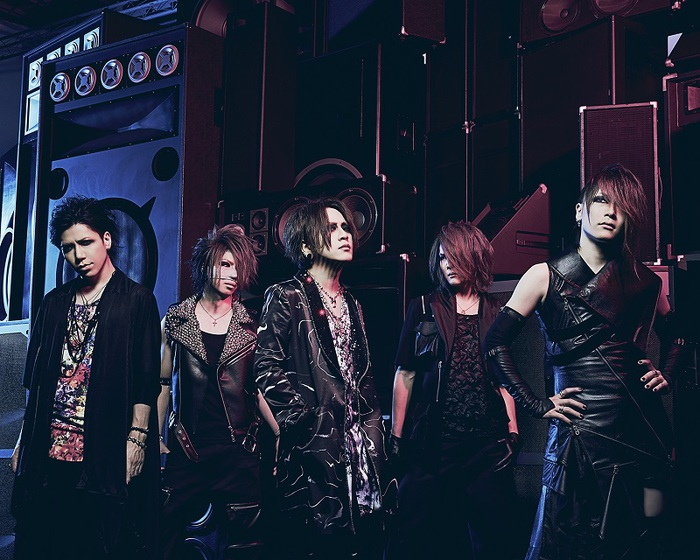

<!DOCTYPE html>
<html lang="en">
<head>
    <meta charset="UTF-8">
    <meta name="viewport" content="width=device-width, initial-scale=1.0">
    <meta http-equiv="X-UA-Compatible" content="ie=edge">
    <title>課題</title>
    <link rel="stylesheet" href="ook.css">
</head>
<body background="../images/maxresdefault.jpg"></body>
<body>
        <h1>好きなバンド</h1>

        <header>
                <div id="nav-drawer">
                    <input id="nav-input" type="checkbox" class="nav-unshown">
                    <label id="nav-open" for="nav-input"><span></span></label>
                    <label class="nav-unshown" id="nav-close" for="nav-input"></label>
                    <div id="nav-content">
                            <aside id="sidebar" class="scroll">
                                    <nav id="global-nav">
                                        <ul>
                                            <li><a href="kadai01.html">SID</a></li>
                                            <li><a href="penta.html">ペンタゴン</a></li>
                                            <li><a href="rsi.html">R指定</a></li>
                                                </ul>
                                    </nav>
                                </aside>
                            </div>
                </div>
              </header>

        <h2>the GazettE</h2>
        <p>
            
         
         
         <script>
         
         //画像を配列に格納する
         var img = new Array();
         
         img[0] = new Image();
         img[0].src = "images/44.jpg";
         img[1] = new Image();
         img[1].src = "images/333.jpg";
         img[2] = new Image();
         img[2].src=  "images/67.jpg";
         img[3] = new Image();
         img[3].src = "images/ph_01.jpg";
         img[4] = new Image();
         img[4].src = "images/gaze-thumb-700xauto-24880.jpg";
         
         //画像番号用のグローバル変数
         var cnt=0;
         
         //画像切り替え関数
         function changeIMG(){
           
           //画像番号を進める
           if (cnt == 4)
           { cnt=0; }
           else
           { cnt++; }
           
           //画像を切り替える
           document.getElementById("gazo").src=img[cnt].src;
         }
         
         </script>
         </p>
                
        <p>vocal  RUKI</p>
        <p>Guitar  麗/URUHA</p>
        <p>Guitar 葵/AOI</p>
        <p>Bass  REITA</p>
        <p>Drum  戒/KAI</p><br>
        <p>好きな曲　「貴女ノ為ノ此ノ命。」</p>
        
</body>
</html>